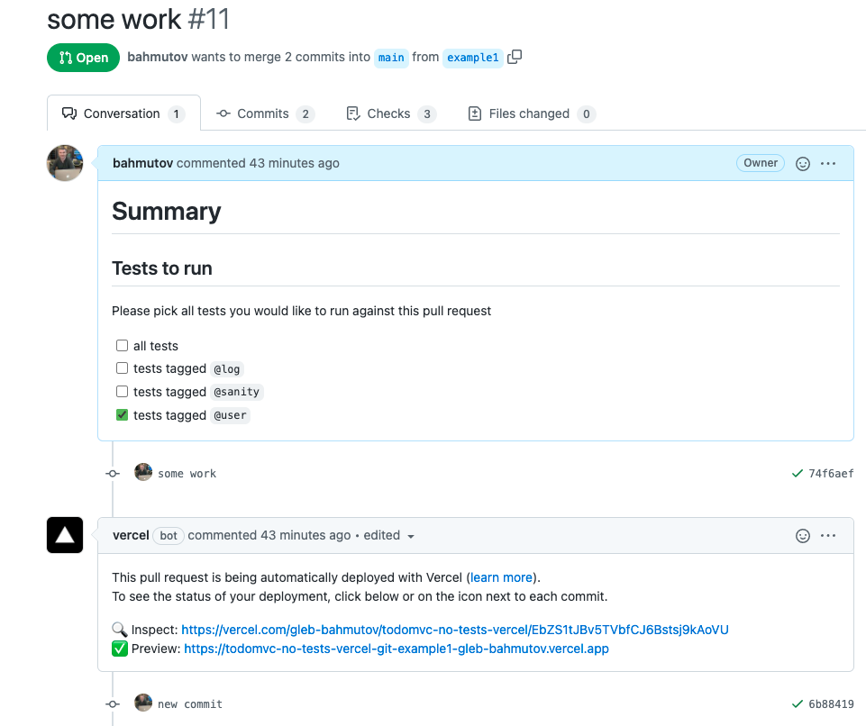
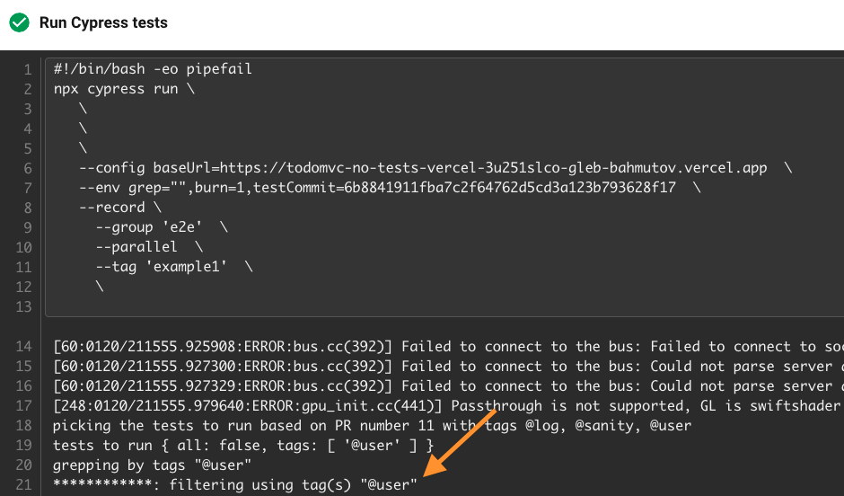
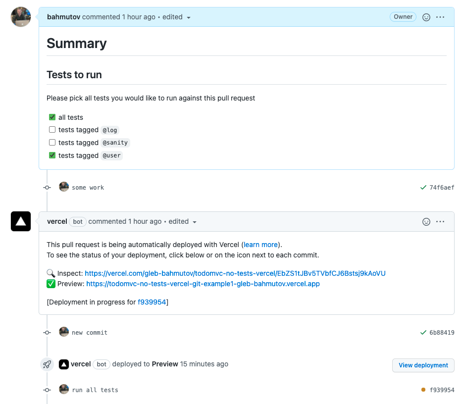
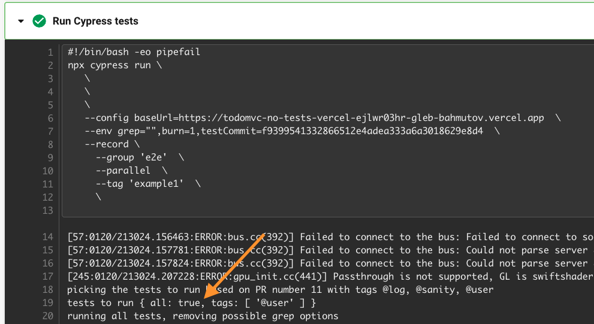
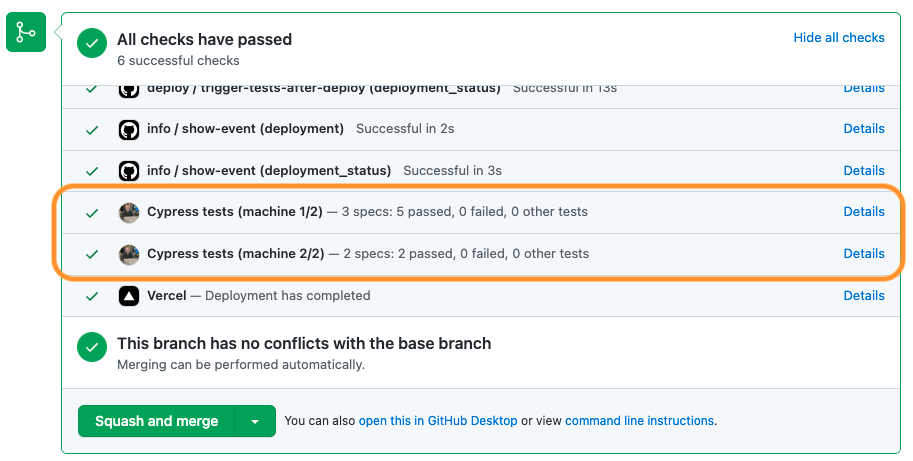

I have been looking closely at keeping the tests in a separate repo from the application. At Mercari US our frontend lives in its own repository, and triggers the Cypress tests in another repository using trigger-circleci-pipeline utility. We even report the test statuses back in the original repo using GitHub statuses via cypress-set-github-status plugin. But there is a disconnect between opening a feature pull request and picking the tests to run. For speed, we run any changed specs in the test repo branch with the matching name, and then run all tests tagged @sanity (read how we tag the tests in the blog post How To Tag And Run End-to-End Tests).
If the developer wants to run more tests, they can trigger the tests from the command line using the run-cy-on-ci utility. For convenience, we also allow you to start a new test run via GitHub Actions manual workflow where you can pick the test tags to run via a web form.

While the above approaches are ok, they are inconvenient. You have to trigger a separate test run, not tied to the original feature pull request. What if you could specify the tests to run when opening your pull request? This is what this blog post will show you.
The application
For this blog post, I will use the bahmutov/todomvc-no-tests-vercel repo. On every pull request, a preview environment is deployed. The tests live in their own repo bahmutov/todomvc-tests-circleci. The tests are tagged, and let's use the utility find-cypress-specs to learn about them.
1 | $ npm i -D find-cypress-specs |
1 | { |
1 | $ npm run names |
Let's look at the tags applied to the tests
1 | $ npm run tags |
These are the tags we want to the user to pick when they make a new pull request to change the TodoMVC application behavior. Plus of course, the user might want to run all the tests without any filtering.
Application pull request
Let's create a pull request template in the application repo. It should be named .github/PULL_REQUEST_TEMPLATE.md for GitHub to automatically use it when opening a new PR.
1 | # Summary |
When a pull request is opened, the application gets deployed, triggering the deployment_status event. If the deployment has been successful, we trigger the tests pipeline in the tests repo. See the deploy.yml workflow for details, but we pass the URL to test, and the current commit SHA as test pipeline parameters to test the right thing
1 | export TEST_URL=${{ github.event.deployment_status.target_url }} |
Sometimes we know the pull request number right away. In my situation, that number of unavailable. At least the head commit SHA was known, thus I could pass it to the test pipeline via TEST_COMMIT=${GITHUB_SHA} parameter.
The tests
In the bahmutov/todomvc-tests-circleci CircleCI workflow we receive the TEST_ parameters and run Cypress tests against them. But we also install the grep-tests-from-pull-requests plugin and configure it.
1 | $ npm i -D grep-tests-from-pull-requests |
In the plugin file we put the grep-tests-from-pull-requests first, before the cypress-grep plugin.
1 | module.exports = async (on, config) => { |
In my situation the pull request number is unknown, thus the plugin will try to list all pulls requests in the repo bahmutov/todomvc-no-tests-vercel and find the pull request with the head commit equal to the given SHA. See the full CircleCI workflow file and the cypress/plugins/index.js.
A pull request
Let's open a new pull request in the application repo.

When opening the pull request, I checked the @user line. The triggered CircleCI pipeline in the todomvc-tests-circleci shows the correct tests to run by tag. It has found the pull request number 11, read the Markdown text, and found the line with checked box for tag @user

Only a single spec file with a single test has executed. Now let's say we want to execute all tests. We check the box all tests and push an empty commit.

The option "all: true" overwrites all other options and all tests will execute

Trigger workflow by clicking on the checkbox
Tip: for "normal" GitHub workflows, you can re-trigger the workflow when clicking or clearing the checkboxes using the pull request event with custom activation types:
1 | name: pr |
Nice!
Since each checkbox change produces "edited" event and triggers the workflow, I suggest if you want to check and uncheck multiple boxes to edit the pull request text then click "Save" instead of clicking the individual checkboxes.
Bonus 1: status checks
We want to see the feedback on each application pull request right there in the application pull request. Using cypress-set-github-status plugin, you can report the Cypress test statuses back on the original commit. The plugin is set up very similarly to the grep-tests-from-pull-requests plugin. In the Cypress plugins file, point at the original repository and pass the commit and the token to set the status.
1 | // when we are done, post the status to GitHub |
In the pull request I have used, the statuses are displayed using my GitHub profile, since I am using my personal GH token.

You can see the status checks for yourself in the PR #11.
Bonus 2: baseUrl
You can also specify the baseUrl to run the tests against using the pull request text, or even find it from one of the comments (like some automated deployment systems do). If the pull request has a line like baseUrl <...> or TestURL: <...> it will be automatically picked up and used:
1 | // pull request text |
Bonus 3: extra variables
Finally, we have added extracting additional user variables to be passed via Cypress.env() from the text lines that start with CYPRESS_... prefix
1 | CYPRESS_num=1 |
The above PR text will automatically be converted into Cypress.env() object
1 | { |
See bahmutov/grep-tests-from-pull-requests for details.